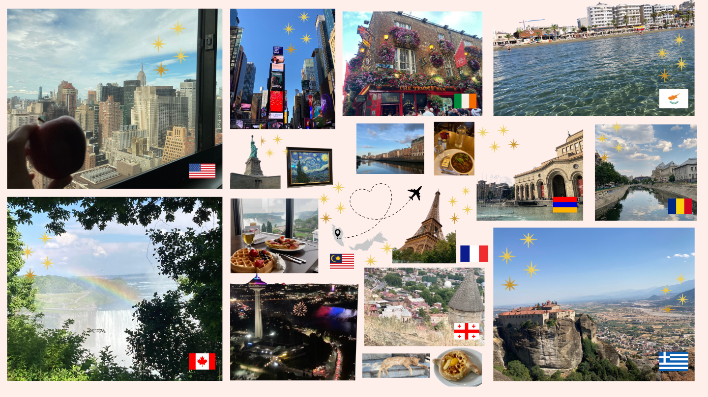
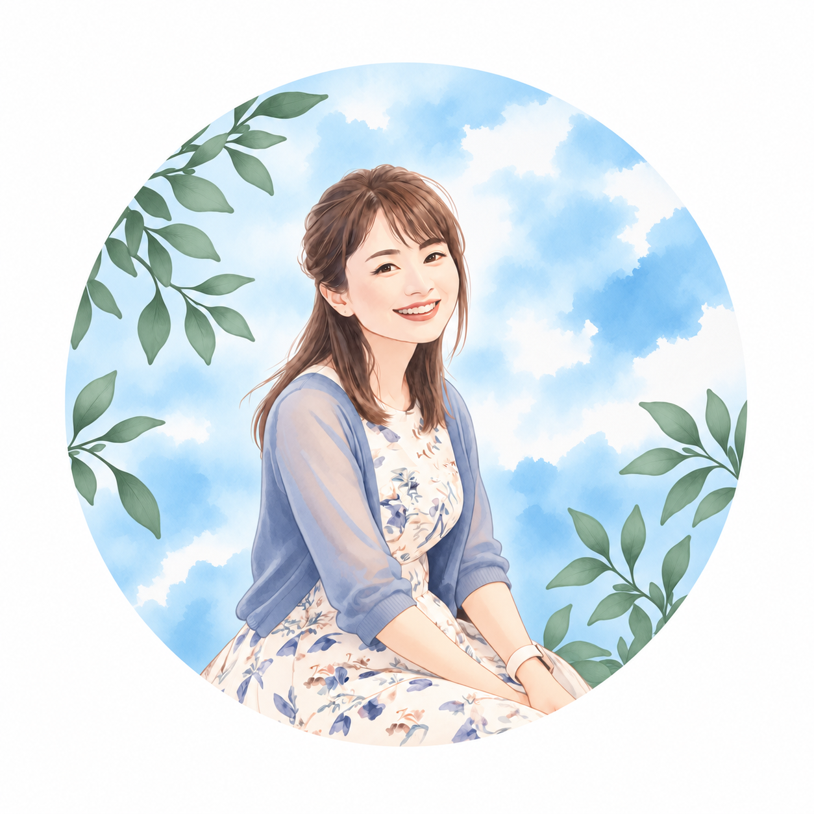

TRAVEL / MOODBOARD
01Mood Board
Canvaで作成。「一目見て自分の気分があがるものを作る」がテーマです。2025年7月に訪れた国々で撮った写真をまとめました

色々な国を旅して出会った景色や文化、知らなかったことを知る楽しさが、私の創作の原点です。
これまでの海外生活や仕事の経験に、学んできたWeb・AI関連の知識を掛け合わせ、相手に伝わるものづくりを目指しています。
作品をクリックして詳しく見る ↗
Canvaで作成。「一目見て自分の気分があがるものを作る」がテーマです。2025年7月に訪れた国々で撮った写真をまとめました
AIを活用した動画作品
AIを活用した画像作品
完成作品 · 画像をクリックして切り替え
Adobe Illustratorで制作した作品
 ↗
↗使用ソフト：Adobe Illustrator
PDFで作品を見る ↗Web・AI関連の学習を続けながら、制作の幅を広げています。
Webクリエイター能力認定試験 エキスパート合格。Webの基本的な制作知識を身につけています。
Webやグラフィックの制作物を、使用ツール・担当工程とともに紹介していきます。
AI関連の知識を学びながら、表現や制作への活用を探求しています。
これまでの経験を、これからの新しい挑戦へ。

富山出身。関西の大学卒業後、東京で数年生活ののち、マレーシアで7年間働きながら生活。その後、WEB/AI関連のことを学び、今後はそれに関わる仕事をしたいと考えています。
旅行に行って新しいことを経験したり、知らなかったことを知るのが好きで、現在まで61ヵ国を旅行しました。
これまでの経験と、学んだWEB/AI関連の知識を活かし、これからまた新しい挑戦をしていきたいと思っています。
就職活動・お仕事のご相談に向けて、制作できることや学んでいることを紹介します。
Web制作の知識を活かせる業務に挑戦したいと考えています。
制作実績を追加しながら、対応できる内容を明確にしていきます。
学習した知識を活かせる制作・サポート業務を目指しています。
就職・お仕事のご相談、制作についてのお問い合わせをお待ちしています。
メールで問い合わせる ↗※ 公開前に連絡先メールアドレスを設定してください。